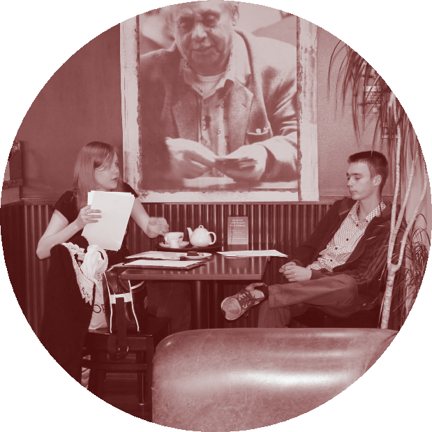

About the project
Hot Spot is a comedy project consisting of video, audio and web elements. It is intended to be an ongoing series of content following the goings on at a local coffee shop, which has just started hosting a speed dating event. The first video and radio piece focus primarily on Alf, a 75 year old widower, and his accidental foray into the world of speed dating, highlighting his interactions with the other people at the event.
The scripts for these pieces can be found below.